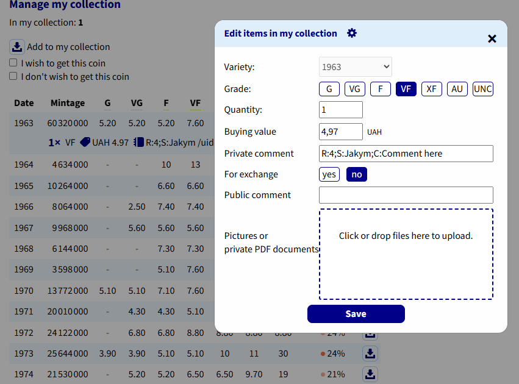

Numista: вивантаження та індекс рідкісності

Скриншот: images/09-numista-comment.png
Вивантаження у вашу колекцію на Numista
Одна монета: праве клацання → Upload to Numista/Вивантажити в Numista. Багато: позначте примірники → Upload/Вивантажити. Вивантажуються лише примірники, пов'язані з Numista (#Numista): стан, ціна, дата купівлі та коментар. Фото не вивантажуються.
- Вивантажені примірники отримують ✓ і повторно не надсилаються.
- Примірник, який ви вже додали на сайті Numista, не дублюється: його пов'язано з тим предметом, і він отримує ✓.
Приватний коментар
Програма записує коментар як атрибути Код:значення через ;:
| Код | Значення |
|---|---|
S | Обмін (uCoin) |
C | Ваш коментар (завжди останній) |
R | Індекс рідкісності 0–100 — додаєте самі на Numista |
Індекс рідкісності
Numista API не надає індекс рідкісності. Скопіюйте його зі сторінки типу на Numista у приватний коментар предмета
вашої колекції, наприклад R:9;S:…;C:…, потім Read rarity index/Прочитати індекс рідкісності.
Один запит читає всю колекцію, тож позначте багато монет і прочитайте їх разом.